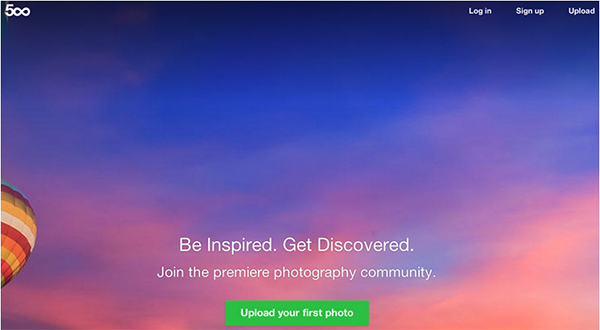

500px
500px is the site to go for photography inspiration. Their popular page is one of the best sources of high quality photography on the web.
Visit webpagePhotography is inspiring in many ways. It can help designers better appreciate colors and tones, it can inspire other photographers, and it can be an inspiration to all about the beauty of this world. However, finding the right photography inspiration can sometimes be a challenge. In this post our goal is to give you the some of the best photography websites for inspiration that you can go back to day after day and never leave uninspired.
500px is the site to go for photography inspiration. Their popular page is one of the best sources of high quality photography on the web.
Visit webpagePhotography Served is a great curated site from Behance that features photography projects and a lot of inspiring imagery.
Visit webpageExposure is such a cool site, and it is relatively new. It features inspiring photo narratives and stories. The story aspect to it makes the images so much more interesting.
Visit webpagePhases Mag is great site with various galleries, incredible ideas and projects from interesting photographers that are really well done. Dont miss it out!
Visit webpageAll photos on Unsplash are commercial free allowing for them to be used in preview images and blog posts around the web.
Visit webpageParticulr is insanely powerful. It is made up of a talented duo who curate some of the best photography and it is an amazing feed of continuous photography inspiration.
Visit webpage